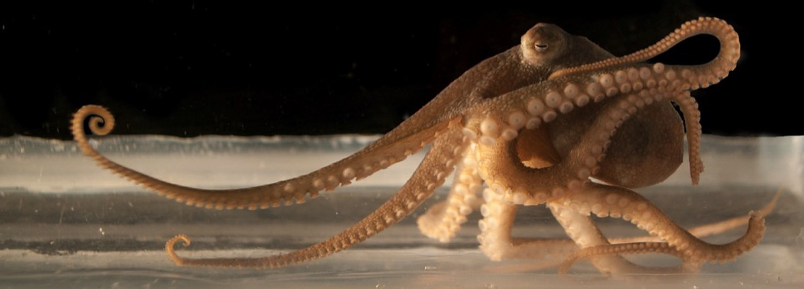
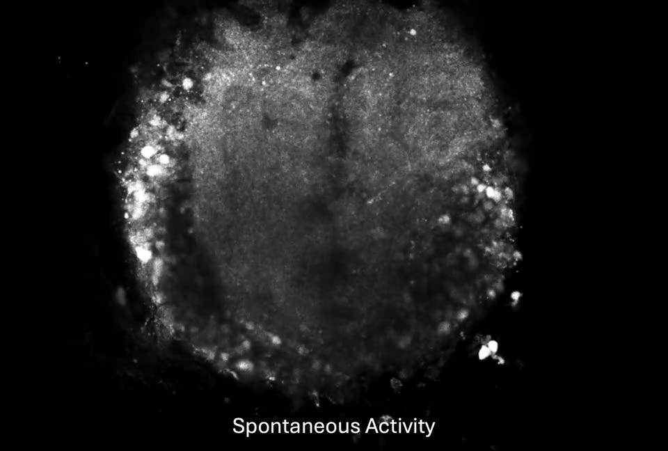
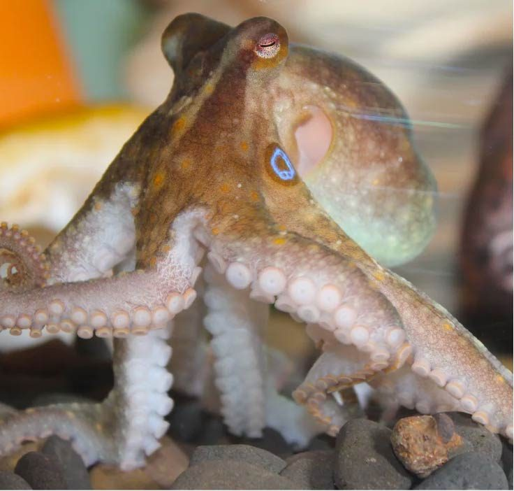

Cephalopods have the largest and most complex nervous systems of any invertebrate. About two-thirds of an octopus's neurons are in its arms.
A multi-lobed central brain and, in octopuses, an axial nerve cord in each arm. I work on the molecular organization of these nervous systems and on the physiology of the circuits they contain.
My doctoral work, with Leonid Moroz at the Whitney Laboratory, mapped molecular diversity in the octopus brain, with a focus on neuropeptides and the neurotransmitter and neuromodulator systems of the learning and memory network. My postdoctoral work, in Robyn Crook's laboratory at San Francisco State University, moved to the arm: I produced the first three-dimensional molecular atlas of the axial nerve cord, then established calcium imaging in living slices of the cord to record how its neuronal populations respond to neurotransmitters. The arm has been my focus for the past four years. It is not the only part of the cephalopod nervous system I work on, and my research program treats brain and arm together: which neuronal cell types keep signaling under thermal and hypercapnic stress, and what protects them.
I have been instructor of record at four institutions, from anatomy and physiology at a state college to upper-division molecular genetics and a graduate physiology seminar, and I design my research so that undergraduates can do the science rather than assist with it. I am on the faculty job market this year.
Background
- 2003–07University of California, Davis. B.S. in Neurobiology, Physiology, and Behavior.A quarter at Bodega Marine Laboratory, designing and running original experiments in marine physiology, is why I stayed in science.
- 2008–09Hopkins Marine Station, Stanford University. Volunteer research assistant.
- 2009–11Cal Poly, San Luis Obispo. M.S. in Biology, stem cell technology, with distinction. CIRM intern at The Scripps Research Institute.Teaching associate for introductory biology laboratories.
- 2011–18University of Florida, Whitney Laboratory for Marine Bioscience. Ph.D. in neuroscience, Moroz laboratory. Dissertation: Molecular Mapping of the Octopus Brain.Single-cell sequencing, in situ hybridization, and immunohistochemistry in molluscan memory centers; electrophysiology and molecular mapping of identified Aplysia neurons. Graduate instructor at Friday Harbor Laboratories; NSF REU mentor; president of the graduate student association.
- 2019–20Daytona State College and Flagler College. Instructor of record: anatomy and physiology, environmental science, general biology.
- 2020–22Octant Bio, Emeryville. Lab operations manager and cell engineer: iPSC-derived neurons, NGS library construction, sequencing platform development.
- 2020–Ocean Genome Atlas Project. Director of Scientific Operations for a UN Ocean Decade initiative mapping marine biodiversity at single-cell resolution from a sailing research vessel.
- 2022–26San Francisco State University, Crook laboratory. Postdoctoral fellow.Three-dimensional molecular atlas of the arm axial nerve cord (Current Biology, 2024); population calcium imaging of arm circuits (iScience, 2026); molecular and ultrastructural characterization of the intramuscular nerve cords (in revision).
- 2026Marine Biological Laboratory, Woods Hole. Kavli-Grass Fellow: an independent summer fellowship with my own project and rig.
- 2026–Oregon State University Ecampus and San Francisco State University. Instructor of record for five courses this fall, online and in person.
Recent
- Nov–Dec 2026Selected for the Kavli Foundation's Science and Society Sparks Program in public engagement.
- 2026Neurochemical control of decentralized octopus arm circuitry accepted at iScience.
- Jun 2026Preprint with three student co-authors on the intramuscular nerve cords of the octopus arm; in revision at the Journal of Comparative Neurology.
- Summer 2026Kavli-Grass Fellowship, Marine Biological Laboratory: calcium imaging in intact O. bimaculoides hatchling arms and a thermal challenge built on that preparation.
- Feb 2026Invited talk, CephNeuro, Galveston: molecular and functional mapping of the octopus arm nervous system.